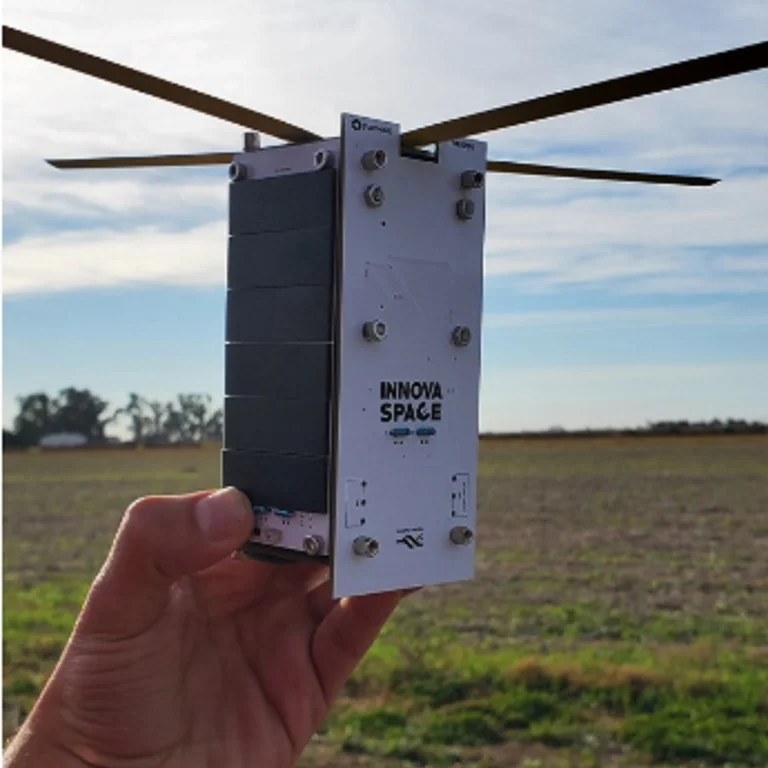
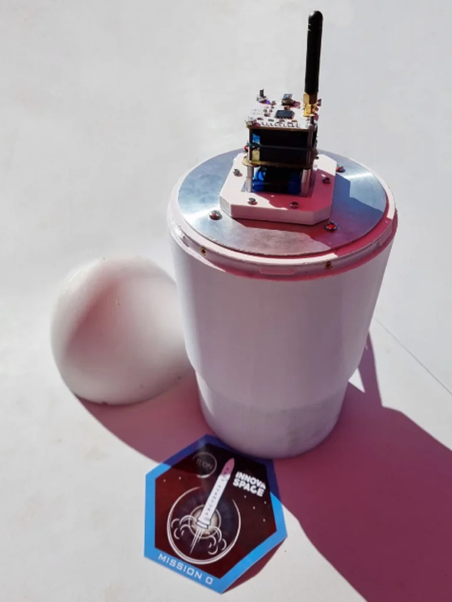
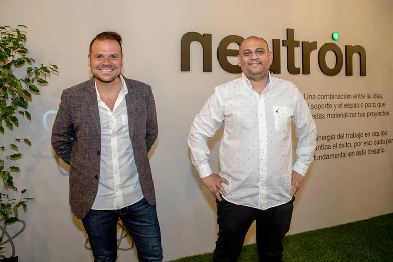
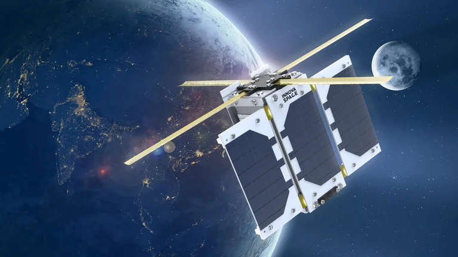
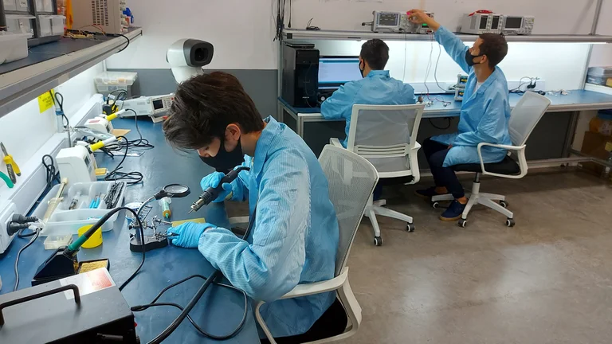
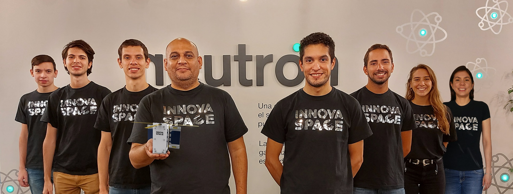

-

Antes de la pandemia, a mediados de 2019, un profesor de una escuela técnica de Mar del Plata decidió proponerle a sus alumnos un proyecto diferente: desarrollar un pequeño satélite utilizando tecnología de bajo costo.
Lo que comenzó como una propuesta didáctica que sólo buscaba motivar a los estudiantes terminó convirtiéndose en apenas tres meses en un prototipo que generó revuelo en el mundo de las empresas tecnológicas. Un “picosatélite”, es decir, un satélite diminuto que cabe en la palma de la mano (10x5x5 centímetros) y pesa unos 500 gramos.
“Durante esos tres meses trabajamos muchas horas incluso fuera de la escuela y nos empezaron a llamar de los medios de comunicación. Los chicos incluso pasaron por Quién quiere ser millonario en busca de fondos”, relató a Infobae Alejandro Cordero, profesor y actual CEO de Innova Space. En ese período, el equipo inicial de ocho alumnos también se redujo a dos, “los verdaderamente abocados al proyecto”.
-

“¿Qué te parece si llevamos a la realidad eso que estás soñando?”. La pregunta que escuchó Alejandro cambiaría la dinámica de trabajo. Maximiliano González Kunz, CEO de Neutrón, decidió que “acelerarían” el proyecto. Una “aceleradora” -como se las conoce en la jerga de las startups- básicamente busca impulsar las empresas tecnológicas recién creadas en sus primeras fases de desarrollo, ya sea a través de financiamiento, contactos, transferencia de Know how o hasta brindando un espacio físico para que trabajen.
Poco tiempo después el equipo ganó el primer premio de Innovación del Ministerio de Educación y también accedió al financiamiento de un ANR (Aporte No Reembolsable) del Ministerio de Desarrollo Productivo de la Nación por $14.500.000. Al mismo tiempo, el equipo se fue profesionalizando y sumando integrantes con conocimientos específicos de materia aeroespacial.
-

A fines de la semana pasada, Innova Space marcó un nuevo hito en su corta historia: logró con éxito el primer vuelo suborbital montado sobre un cohete que también es de fabricación y desarrollo nacional. Se lo denomina vuelo suborbital porque no quedó en órbita sino que cayó a la Tierra con un pequeño paracaídas.
El prototipo del satélite MDQube SAT-1 fue alojado en la cabeza del cohete AVENTURA I-e2, de la compañía TLON, y pudo transmitir información de variables atmosféricas durante más de cinco horas, incluidos el despegue, la separación de la cofia del fuselaje, y la caída en paracaídas hasta su aterrizaje. Los datos de telemetría del satélite fueron subidos a internet en tiempo real durante toda la experiencia. Fue la primera vez que se lanzó un picosatélite en un lanzador, ambos diseñados y desarrollados en nuestro país.
-

Pero Alejandro, sus ex alumnos Luca Uriarte (20) e Iván Mellina (20), y el resto del equipo ya están pensando en la próxima etapa de su sueño. En octubre, si todo sale según lo planeado, enviarán el satélite testeado a Escocia. Allí será analizado por la empresa Alba Orbital, “broker” de la célebre empresa espacial de Elon Musk, Space X, como paso previo para seguir su recorrido hasta Cabo Cañaveral, donde será montado en el cohete Falcon 9 para su lanzamiento en diciembre.
Una vez en el espacio el picosatélite argentino MDQube-SAT1 orbitará en la LEO (Low Earth Orbit), en una Órbita Polar a unos 400-500 kilómetros aproximadamente. “Va a ser el más pequeño de Argentina y de Latinoamérica jamás lanzado. Vamos a probar cómo funcionan los paneles solares, las baterías y las comunicaciones”, detalló Alejandro.
-

A partir de ahí, las posibilidades son infinitas. Alejandro sueña con poder lanzar una constelación de entre 85 y 100 picosatélites en un plazo de dos a tres años. Con esa red podrá dar comunicación de “Internet de las cosas” a todo el mundo.
En concreto, el proyecto está pensado para dar cobertura de comunicación donde no la hay, lo que en la Argentina significa el 70% del territorio, principalmente áreas agrícolas y mineras.
“Por ejemplo, si tenés un silobolsa, podés ponerle un sensor y nuestros satélites van a permitir que transmita información aunque esté en una región donde no hay comunicaciones; el productor va a poder saber qué pasa con su cosecha desde el celular”, detalla Alejandro.
En la misma línea, Maximiliano González Kunz explica que “la idea es democratizar el acceso a ciertas soluciones a partir de una constelación muy económica de satélites, por ejemplo llegar a lugares inhóspitos y poder generar comunicaciones: en un campo se puede medir humedad, riegos, etc”. La constante disminución de los costos tecnológicos podría posibilitar que un lanzamiento cueste “menos de 25 mil dólares”, una cifra accesible dado el nivel de desarrollo involucrado.
Una vez en órbita, los picosatélites tendrán una vida útil muy corta, de entre dos y tres años. Pasado ese tiempo, comenzarán a caer y terminarán por desintegrarse debido a la fricción del reingreso a la atmósfera. “Ya estaríamos cumpliendo con un requisito que la NASA va a pedir en los próximos años, que ningún satélite dure más de cinco años para evitar la generación de chatarra espacial”, explicó.
Los picosatélites son diseñados y construidos íntegramente en los talleres de Neutrón en Mar del Plata. “No hay nada estándar que compremos afuera, tanto el procesador, como el CPU, como el programa y el chasis”, asegura con orgullo Alejandro. Su sueño se entrelaza con el futuro del país: “Para el 2050 la demanda de alimentos se va a multiplicar y si el campo no se tecnifica no va a poder satisfacer esa demanda del mundo”.
-
